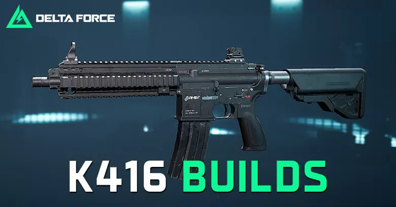
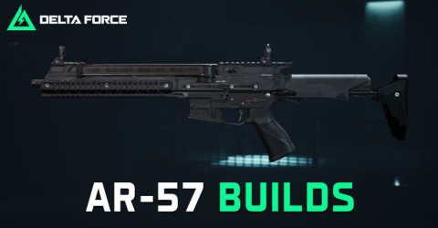
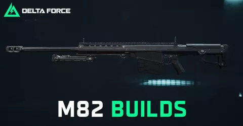

定位：全距离通用，最推荐新手改满的第一把枪。
配件推荐：416L枪管（射程+15%）+ 任意握把 + 绿电池 + 消音器
成本：约8-12万（配件贵但保值）
配件选对，战斗力翻倍。好改装能让白板武器发挥橙色品质的实力。

定位：全距离通用，最推荐新手改满的第一把枪。
配件推荐：416L枪管（射程+15%）+ 任意握把 + 绿电池 + 消音器
成本：约8-12万（配件贵但保值）
优先提升射程 + 控制，K416吃到射程加成后4枪死满血3级甲。

定位：5-30米近战神器，射速快、控制易。
配件推荐：针对近战优化（镭射 + 消音器 + 轻枪管）
成本：约5-8万（性价比极高）
AR57优势在5-30米，超距会被K416完虐。近战腰射极强，可替代霰弹枪。
定位：入门首选，成本低、伤害足。
配件推荐：改装配件 + 消焰器 + 30发弹夹
成本：约3-5万（新手友好）
AKS74U后坐力大，需要练习压枪。但单发伤害高，3枪头即可击杀。
定位：冲锋枪入门首选，成本低、控制易。
配件推荐：消焰器 + 30发PMAG弹夹 x2
成本：约1-2万（最便宜的改装）
MP5白板（1.1万）+ 配件（2100）= 总成本1.31万，死10次才亏13万。
定位：滑铲腰射流派首选，射速极快。
配件推荐：镭射 + 消音器 + 50发弹鼓
成本：约6-10万（配件较贵）
K15适合滑铲接腰射打法，无敌帧期间输出爆炸。但需要一定的操作技巧。

定位：64米内胸部以上一枪必杀，可穿透掩体。
配件推荐：高倍镜（8倍+）+ 制退器 + 重型枪管
成本：约15-20万（最贵但最强力）
M10 "RAZOR"（6级穿+延缓用药）| M3 "K-0"（6级穿+减速）| M903 SLAP（7级穿甲）
定位：中距离（50-150米）精准打击。
配件推荐：4倍镜 + 消音器 + 中型枪管
成本：约8-12万（性价比高）
射手步枪适合露娜（侦察兵）使用，标记后精准击杀。不要当成狙击枪用。
半自动反器材重狙，使用 .50 BMG 口径弹药。
M10 "RAZOR"（6级穿+延缓用药）| M3 "K-0"（6级穿+减速）| M903 SLAP（7级穿甲）
静音、无弹道，适合隐蔽偷袭。
镜头 55 / 开火 48 / 瞄准 45 — 适配全武器控枪，职业选手验证数据